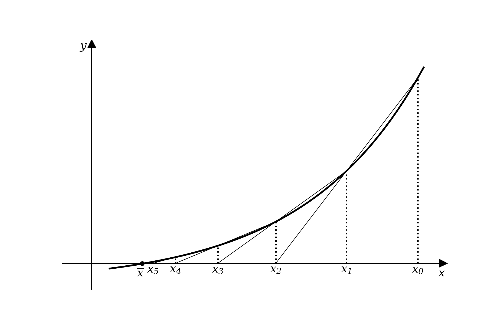

2.5 Método das Secantes#
O método das secantes consiste em aproximarmos a derivada da função \(f'(x_i)\) que ocorre no método de Newton da seguinte forma:
Observe que, neste caso, estamos trocando a inclinação da reta tangente pela inclinação da reta secante à curva, conforme a figura abaixo. Assim, dados os pontos \(x_{i−1}\) e \(x_i\) , onde a reta secante, passando por \((x_{i−1}, f(x_{i−1}) )\) e \((x_i , f(x_i))\), cortar o eixo das abscissas, temos a aproximação \(x_{i+1}\) para a raiz \(\overline{x}\), conforme ilustrado
Figura 2.5.1 - Interpretação geométrica do método das secantes
Assim, o método de Newton, dado por
é modificado da seguinte forma
Que pode ser reescrito como
Exemplo 2.5.1: Vamos encontrar a raiz da equação \(ln(x)+x-4=0\) com tolerância \(\epsilon = 0.0001\) usando o método das secantes.
Com base no que já foi feito no exemplo 2.4.1 podemos obter as iterações com o código mostrado a seguir.
import math
err = 10.0
x0 = 1.0
x1 = 2.0
f = lambda x: math.log(x)+x-4.0
while err> 0.0001:
x = (x0*f(x1)-x1*f(x0))/(f(x1)-f(x0))
err = abs(x-x1)/abs(x) # calcula o erro relativo
x0 = x1
x1 = x
print ("x=%.5f"%x, ", err=%.5f"%err)
x=2.77185 , err=0.27846
x=2.91848 , err=0.05024
x=2.92622 , err=0.00264
x=2.92627 , err=0.00002
Em Nogueira (2024) é disponibilizada uma implementação do método da secante como uma função cujos parÂmetros de entrada são a função (f), a precisão desejada (e) e as aproximações iniciais (x_0e x_1). O código abaixo mostra como utilizar a função secant.
# definindo a funcao secant
def secant(f, e, x0, x1):
error = 1
while error > e:
x2 = x1 - f(x1)*(x1-x0)/(f(x1)-f(x0))
error = abs(x2-x1)/abs(x2)
x0 = x1
x1 = x2
return x2
# chamando a funcao secant
x = secant(f, 0.0001, 1.0, 2.0)
print("Método da Secante: ", round(x, 5))
Método da Secante: 2.92627
O método da falsa posição (também conhecido como regula falsi) gera aproximações da mesma maneira que o método da secante, mas inclui um teste para garantir que a raiz esteja sempre no intervalo delimitado por iterações sucessivas.
Primeiramente, escolha as aproximações iniciais \(x_0\) e \(x_1\) com \(f(x_0)\cdot f(x_1)<0\). Então, do mesmo modo que no método da secante, a aproximação \(x_2\) é escolhida como a interseção da reta que liga os pontos \((x_0, f(x_0))\) e \((x_1, f(x_1))\) com o eixo \(x\). O ponto de intersecção \(x_2\) divide o intervalo \((x_0,x_1)\) em dois subintervalos. Para a próxima iteração escolhe-se o intervalo que contém a raiz, verificando se \(f(x_0)\cdot f(x_2)\) ou \(f(x_1)\cdot f(x_2)<0\).
Em Nogueira (2024) é disponibilizada uma implementação do método da falsa posição, false_poscomo uma função cujos parâmetros de entrada são os mesmos da função secant. O código abaixo mostra como utilizar a método da falsa posição para o mesmo problema do exemplo 2.5.1.
Exemplo 2.5.2: Vamos encontrar a raiz da equação \(ln(x)+x-4=0\) com tolerância \(\epsilon = 0.0001\) usando o método da falsa posição.
def false_pos(f, e, x0, x1):
if f(x0) * f(x1) >= 0:
return
error = 1
while error > e:
x2 = x1 - f(x1)*(x1-x0)/(f(x1)-f(x0))
if x2==0:
print('raiz')
if f(x0) * f(x2) < 0:
x1 = x2
else:
x0 = x2
error = abs(x1 - x0) / abs(x2)
return x2
f = lambda x: math.log(x)+x-4.0
x = false_pos(f, 0.0001, 2.0, 4.0)
print("Método da Falsa Posição: ", round(x, 5))
Método da Falsa Posição: 2.92627
Exercícios:
1. Seja \(f(x)=-x^3-\cos x\). Com \(x_0=-1\) e \(x_1=0\). Obtenha uma solução com precisão de 5 casas decimais utilizando o método da secante.
2. Obtenha uma solução para a equação \(e^x+2^{-x}+2 \cos x-6=0\) utilizando o método das secantes com \(\epsilon = 10^{-5}\) e faça um gráfico do erro relativo em função do número de iterações.
3. Resolva os exercícios 1 e 2 usando o método da falsa posição e compare os resultados.
4. Faça um programa para resolver equações utilizando os métodos da secante e da falsa posição, e plotar um gráfico do erro relativo em função do número de iterações para cada método. Use alguma das equações do exercício a seguir para testar.
5. Calcule, se possível, as raízes das seguintes funções com pelo menos 6 casas de precisão. Use diferentes métodos e compare a velocidade de convergência.
a) \(f(x) = \sqrt{x}-5^{-x}\)
b) \(f(x) = e^{x} + x\)
c) \(f(x) = xln(x)-1\)
d) \(f(x) = sen(x)-1/2\)
e) \(x^3-7x^2+14x-6=0\)
f) \(2x cos(2x)-(x+1)^2=0\)
g) \(x-2^{-x}=0\)
h) \(2+cos(e^x-2)-e^x=0\)
i) \(f(x) = –0.5x^2 + 2.5x + 4.5\)
j) \(f(x) = 5x^2 – 5x^2 + 6x -2\)
k) \(f(x) = –25 + 82x – 90x^2 + 44x^3 – 8x^4 + 0.7x^5\)
l) \(f(x) = – 12 – 21x + 18x^2 – 2.75x^3\)